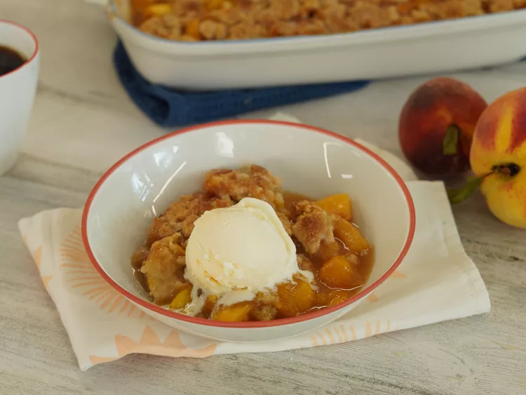

Fresh Southern Peach Cobbler Recipe

Description
A warm mixture of sweetened, juicy peaches is topped with a biscuit-like dough and sprinkled in cinnamon sugar. Although it's made from scratch with fresh peaches, this easy peach cobbler is incredibly simple and comes together in just one hour.
Ingredients:
- 8 fresh peaches - peeled, pitted and sliced into thin wedges
- 1/4 cup white sugar
- 1/4 cup brown sugar
- 1/4 teaspoon ground cinnamon
- 1/8 teaspoon ground nutmeg
- 1 teaspoon fresh lemon juice
- 2 teaspoons cornstarch
- 1 cup all-purpose flour
- 1/4 cup white sugar
- 1/4 cup brown sugar
- 1 teaspoon baking powder
- 1/2 teaspoon salt
- 6 tablespoons unsalted butter, chilled and cut into small pieces
- 1/4 cup boiling water
- 3 tablespoons white sugar
- 1 teaspoon ground cinnamon
Steps:
- Gather the ingredients.
- Preheat the oven to 425 degrees F (220 degrees C).
- Combine peaches, 1/4 cup white sugar, 1/4 cup brown sugar, 1/4 teaspoon cinnamon, nutmeg, lemon juice, and cornstarch in a large bowl; toss to coat evenly, and pour into a 2-quart baking dish. Bake in preheated oven for 10 minutes.
- Meanwhile, combine flour, 1/4 cup white sugar, 1/4 cup brown sugar, baking powder, and salt in a large bowl. Blend in butter with your fingertips or a pastry blender until mixture resembles coarse meal. Stir in water until just combined.
- Remove peaches from oven, and drop spoonfuls of topping over them.
- Mix 3 tablespoons white sugar and 1 teaspoon cinnamon together in a small bowl; sprinkle over entire cobbler.
- Bake in the preheated oven until topping is golden, about 30 minutes.